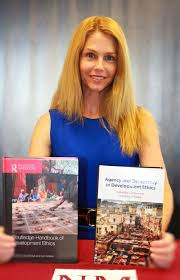

Professor & Director of the Fellowships Office
Professor of Philosophy & Director of the Fellowships Office
New Mexico State University
My work lives at the crossroads of development ethics, feminist philosophy, and the history of ideas — asking how ancient and medieval wisdom can inform our most urgent contemporary questions about justice, agency, and what it means for every person to truly flourish.
Learn More"Development is freedom — the expansion of real opportunities people have reason to value."
Biography
Dr. Lori Keleher is a Professor of Philosophy and Director of the Fellowships Office at New Mexico State University, where she has been a faculty member since 2008. A New Mexico native and NMSU alumna — she earned her B.A. in Philosophy from NMSU in 1997 — she later received her M.A. from Michigan State University and her Ph.D. from the University of Maryland in 2007.
Her research concentrates on reconciling the theory and practice of human flourishing, with particular interest in agency, empowerment, the capabilities approach, and integral human development ethics. She co-leads The Journal of Global Ethics and serves on the Executive Team and Senior Advisory Council for the Center for Values in International Development. She is President of the International Development Ethics Association (IDEA) and a Fellow of the Human Development and Capability Association (HDCA).
As Director of the Fellowships Office at the William Conroy Honors College, Dr. Keleher works with undergraduate students across all majors to apply for prestigious national fellowships — including Fulbright, the Payne Fellowship, and the Udall Undergraduate Scholarship. She brings professional experience from Africa, Asia, Europe, and North and South America to her teaching and scholarship.
Areas of Inquiry
Investigating foundational questions of moral theory — the nature of virtue, obligation, and human flourishing — with attention to both classical frameworks and contemporary challenges.
Examining the moral dimensions of global poverty, distributive justice, and the obligations wealthy nations bear toward the global poor, with a focus on agency and empowerment.
Close study of Plato, Aristotle, and the Hellenistic schools, with ongoing interest in how Aristotelian virtue ethics and the concept of eudaimonia speak to contemporary moral questions.
Tracing the transformation of ancient ideas through Aquinas and the scholastic tradition, with particular focus on natural law, practical reason, and integral human development.
Engaging feminist critiques of canonical philosophy — from the capability approach's treatment of women to broader questions of how gender shapes ethics, epistemology, and democratic theory.
A unifying thread across all my work: understanding human development through the lens of Amartya Sen and Martha Nussbaum's capability approach, with particular attention to how agency and empowerment can be activated in contexts of structural inequality.
Scholarship
Dr. Keleher has co-edited three major volumes that have helped define the field of development ethics — bringing together scholars from philosophy, economics, and policy to ask how international development can be truly ethical and genuinely human.

2019
Co-Editor (with Jay Drydyk)
A comprehensive reference work bringing together leading scholars to map the field of development ethics — its history, methods, and the pressing moral questions facing global development today.
2019
Co-Editor (with Stacy Kosko) · Cambridge University Press
An examination of the central role of agency and democratic participation in ethical approaches to international development, drawing on the capability approach and deliberative democracy.
2021
Co-Editor (with Des Gasper) · Special Issue, Journal of Global Development
An exploration of the pioneering work of L.-J. Lebret and his lasting contributions to human development thinking and global development ethics.
Activating Agency through the Alliance Approach
Journal of Global Ethics
Development EthicsAgencyAnger, Dignity and Virtue: A Reply to Karin Adkins
Global Discourse
EthicsFeminist PhilosophyThe Alliance Approach to Innovation: Agro-ecological Innovations, Alliance, and Agency
Journal of Global Ethics
International DevelopmentAgencyIntegral Human Development
Routledge Handbook of Development Ethics
Development EthicsInstitutional Power Matters: The Role of Institutional Power in International Development
Value and Values
International EthicsToward an Integral Human Development Ethics
Veritas
Development EthicsSen and Nussbaum: Agency and Capability-Expansion
Ethics and Social Welfare
CapabilitiesAgencyHuman Development and Capability Association (HDCA)
Encyclopedia of Global Justice
ReferenceCoffee and the Good Life
Grounds for Debate
EthicsApplied PhilosophyIs Sen's Approach to Development Bad for Women?
Parceling the Globe: Philosophical Explorations in Globalization, Global Behavior, and Peace, eds. Poe & Souffrant · Brill
Feminist PhilosophyInternational DevelopmentIn Her Own Words
"Why does philosophy matter for international development?"
In this interview produced by the NMSU Department of Philosophy, Dr. Keleher discusses her research into development ethics, the capabilities approach, and why philosophical inquiry is essential to addressing the world's most pressing problems of poverty, justice, and human flourishing.
Her work asks not just what development should achieve, but how — centering agency, empowerment, and human dignity at every level of theory and practice.
Courses
Undergraduate
A survey of major ethical theories — consequentialism, deontology, virtue ethics, and care ethics — applied to contemporary moral problems.
Undergraduate
Close reading of Plato and Aristotle, with emphasis on the good life, virtue, and what it means for human beings to truly flourish.
Undergraduate
Philosophical perspectives on poverty, development, human rights, and the moral responsibilities of affluent nations toward the global poor.
Undergraduate / Graduate
From early feminist critiques of the Western canon to contemporary work in feminist epistemology, ethics, and political theory.
Graduate Seminar
Advanced reading of Aquinas, Scotus, and Ockham on natural law, practical reason, and the foundations of medieval ethics.
Graduate Seminar
A research seminar exploring Sen, Nussbaum, and the capability approach in theory and practice, with attention to agency, empowerment, and global justice.
Get in Touch
Department of Philosophy
New Mexico State University
Breland Hall, Room 320
Fellowships Office
William Conroy Honors College, NMSU
Office Hours: By appointment